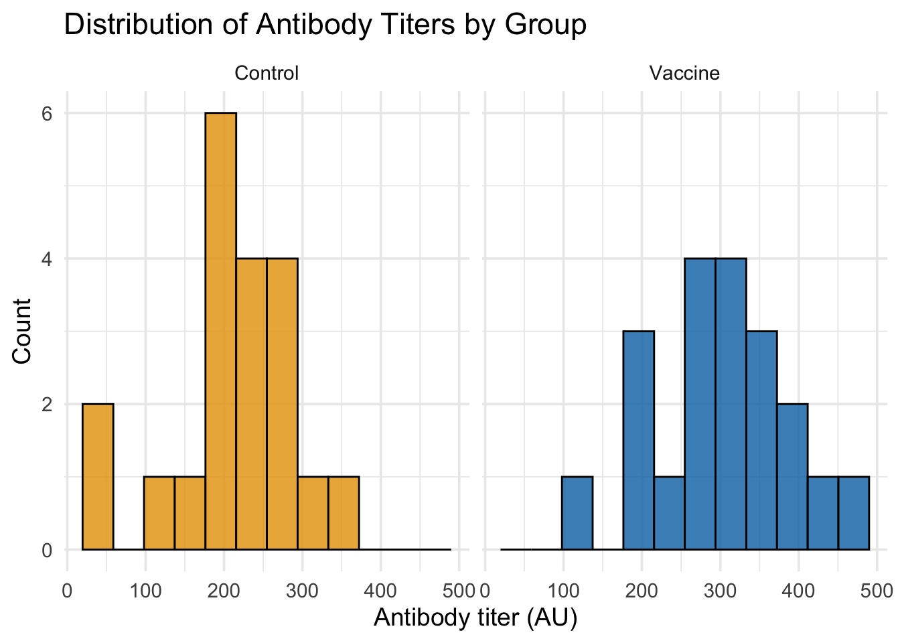
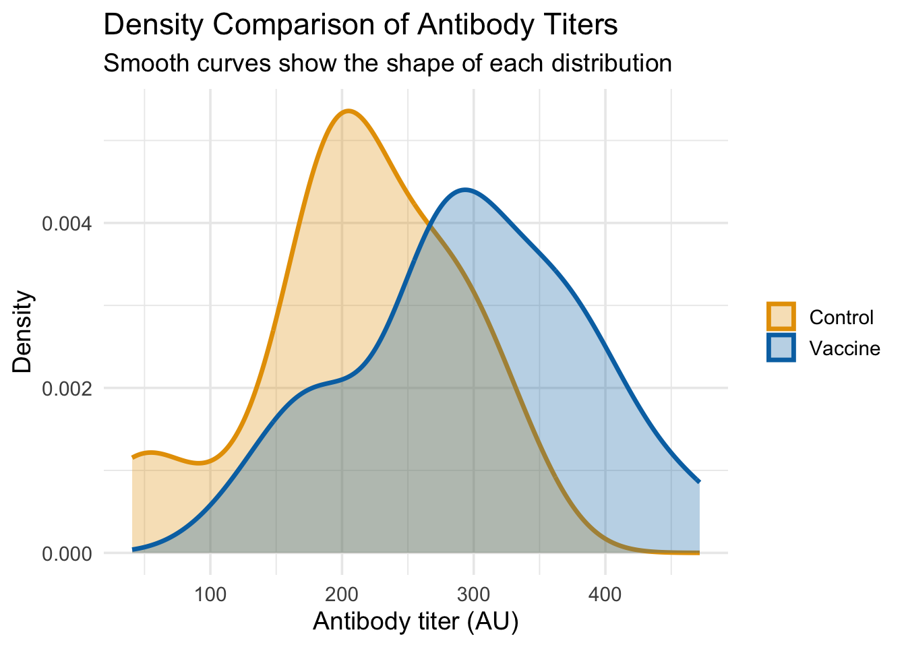
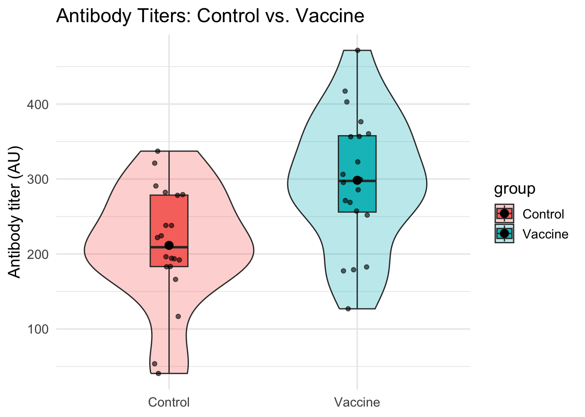
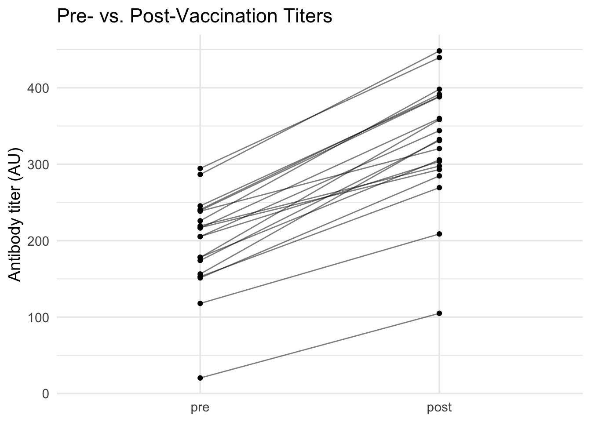
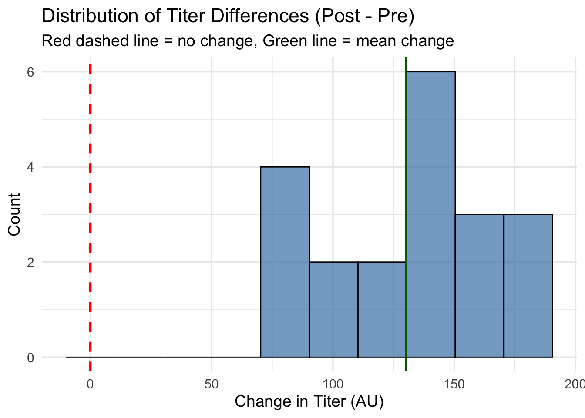
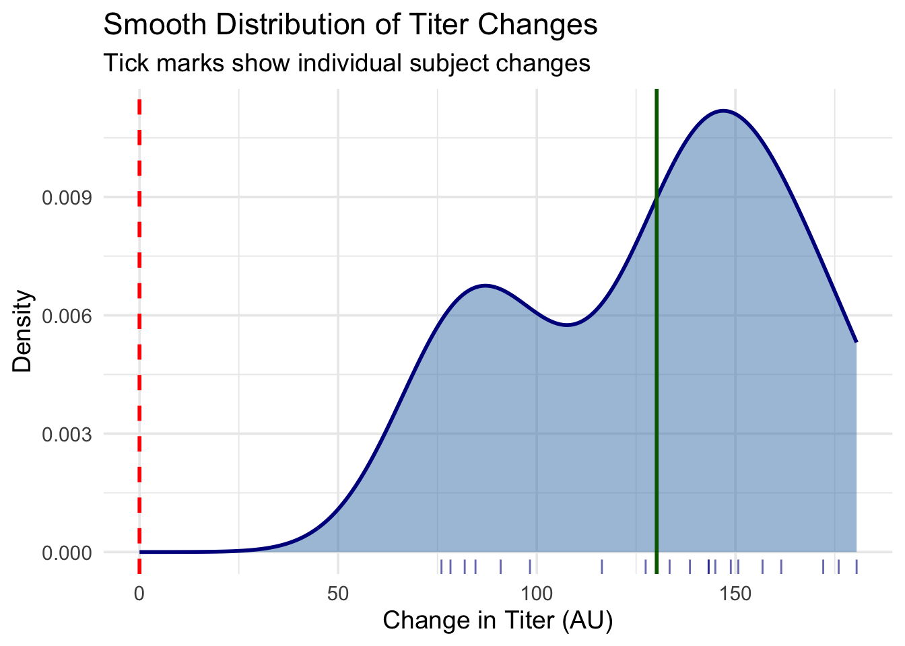
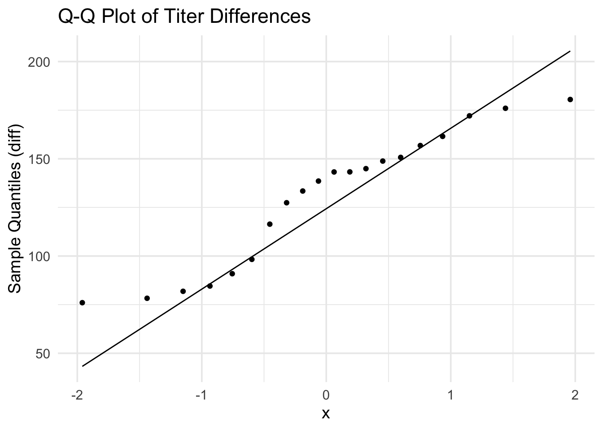

In statistics, it is incredibly helpful to work with data where we know the underlying truth. Simulation allows us to create such datasets. We can set the true means and standard deviations for different groups and then use statistical tests to see if they can correctly identify these differences. This is a powerful way to build intuition for how statistical methods work.
In this section, we will simulate antibody titer data for two common experimental designs:
Unpaired Design: Comparing two independent groups (e.g., control mice vs. vaccinated mice).
Paired Design: Comparing two related measurements from the same subjects (e.g., antibody titers before and after vaccination).
Code
# This chunk ensures all necessary packages are installed and loaded.# List of required packagespackages <-c("tidyverse", "here") # a smaller set for this document# Check if packages are installed, install if notfor (pkg in packages) {if (!require(pkg, character.only =TRUE)) {install.packages(pkg, dependencies =TRUE, repos ="https://cran.rstudio.com/") }}# Load all packagesinvisible(lapply(packages, library, character.only =TRUE))# Use set.seed() to make our random data generation reproducible.# Anyone who runs this code with the same seed will get the exact same "random" numbers.set.seed(42)
Unpaired Design: Control vs. Vaccine
Here, we’ll simulate data for two separate groups of mice. We expect the vaccinated group to have a higher average antibody titer. We will also make their titers slightly more variable.
Code
# Realistic scenario: We're measuring IgG antibodies against influenza # after seasonal flu vaccination. Typical baseline titers range 50-400 AU,# with 2-4 fold increases expected post-vaccination.# Define the parameters for our simulationn_control <-20# Number of control subjectsn_vax <-20# Number of vaccinated subjects# Generate random data from a normal distribution with rnorm()# Arguments: n = sample size, mean = center of distribution, sd = spreadcontrol_titer <-rnorm(n_control, mean =200, sd =60) # Control group titersvax_titer <-rnorm(n_vax, mean =320, sd =80) # Vaccine group: higher mean, larger variance# Combine the data into a single, tidy data frame (tibble)dat_unpaired <-tibble(group =rep(c("Control","Vaccine"), c(n_control, n_vax)), # Create group labelstiter =c(control_titer, vax_titer) # Combine all titer values)# A quick peek at the first few rowshead(dat_unpaired) # Display first 6 rows of the data
# A tibble: 6 × 2
group titer
<chr> <dbl>
1 Control 282.
2 Control 166.
3 Control 222.
4 Control 238.
5 Control 224.
6 Control 194.
Step 1: Always Visualize Your Data
Before any formal testing, it’s crucial to explore the data visually. This helps us check for outliers, see the data’s distribution, and get a feel for the differences between groups.
Code
# Option 1: Side-by-side histograms for clearer comparisonggplot(dat_unpaired, aes(x = titer, fill = group)) +# Map titer to x-axis, group to fill colorgeom_histogram(bins =12, alpha =0.8, color ="black") +# Solid histograms with black bordersfacet_wrap(~group, ncol =2) +# Separate panels for each groupscale_fill_manual(values =c("Control"="#E69F00", "Vaccine"="#0072B2")) +# Colorblind-friendly colorslabs(title ="Distribution of Antibody Titers by Group", x ="Antibody titer (AU)", y ="Count") +# Add labelstheme_minimal(base_size =14) +# Clean theme with larger texttheme(legend.position ="none") # Remove redundant legend

Code
# Option 2: Density plots for smooth comparison (better for overlapping)ggplot(dat_unpaired, aes(x = titer, fill = group, color = group)) +# Map aestheticsgeom_density(alpha =0.3, size =1.2) +# Semi-transparent density curvesscale_fill_manual(values =c("Control"="#E69F00", "Vaccine"="#0072B2")) +# Fill colorsscale_color_manual(values =c("Control"="#E69F00", "Vaccine"="#0072B2")) +# Line colorslabs(title ="Density Comparison of Antibody Titers", x ="Antibody titer (AU)", y ="Density",subtitle ="Smooth curves show the shape of each distribution") +# Add informative subtitletheme_minimal(base_size =14) +# Clean themetheme(legend.title =element_blank()) # Remove legend title
Warning: Using `size` aesthetic for lines was deprecated in ggplot2 3.4.0.
ℹ Please use `linewidth` instead.

Code
# A violin plot combined with a boxplot and jittered raw data points is even better.# It shows the density, summary stats (median, IQR), and individual data points all at once.ggplot(dat_unpaired, aes(group, titer, fill = group)) +# Map group to x-axis, titer to y-axisgeom_violin(width =0.9, alpha =0.3) +# Show distribution shapegeom_boxplot(width =0.2, outlier.shape =NA) +# Add quartiles (hide outliers to avoid duplication)geom_jitter(width =0.08, alpha =0.6) +# Show individual data points with small random spread# We also add a point indicating the mean for each groupstat_summary(fun = mean, geom ="point", size =3, color ="black") +# Add mean as black dotlabs(title ="Antibody Titers: Control vs. Vaccine", x =NULL, y ="Antibody titer (AU)") +# Add labelstheme_minimal(base_size =14) # Clean theme

From these plots, we can clearly see that:
Side-by-side histograms make it easy to compare the shapes and centers of each distribution
Density plots provide smooth curves that clearly show the Vaccine group has higher titers on average
The Vaccine group’s distribution is wider (more spread out), confirming our simulation parameters
Both visualizations complement each other: histograms show actual counts, density plots show smooth shapes
Step 2: Calculate Summary Statistics
Visualizations give us a qualitative sense; summary statistics provide the quantitative details for each group.
Code
summary_unpaired <- dat_unpaired |># Start with our datagroup_by(group) |># Group by Control vs Vaccinesummarise( # Calculate summary statistics for each groupn =n(), # Sample sizemean =mean(titer), # Average titermedian =median(titer), # Middle value (50th percentile)sd =sd(titer), # Standard deviation (spread of data)iqr =IQR(titer), # Interquartile range (25th to 75th percentile)se = sd/sqrt(n), # Standard error of the meanci_low = mean -1.96*se, # Lower bound of 95% CIci_high = mean +1.96*se, # Upper bound of 95% CI.groups ="drop"# Remove grouping for next operations )summary_unpaired # Display the results table
# A tibble: 2 × 9
group n mean median sd iqr se ci_low ci_high
<chr> <int> <dbl> <dbl> <dbl> <dbl> <dbl> <dbl> <dbl>
1 Control 20 212. 209. 78.8 95.3 17.6 177. 246.
2 Vaccine 20 298. 297. 88.8 102. 19.9 259. 337.
This table gives us precise estimates for the mean, spread (SD), and uncertainty of the mean (SE and 95% CI) for each group.
Paired Design: Pre- vs. Post-Vaccination
In a paired design, we measure the same subject multiple times. This is powerful because it controls for inter-individual variability - some people naturally have higher/lower titers, but we’re interested in the CHANGE within each person. We’ll simulate data where each “mouse” has a baseline titer, and vaccination provides a “boost”.
Code
# Number of subjects (same animals measured twice)n <-20# Simulate baseline (pre-vaccination) titers for each subjectpre <-rnorm(n, mean =200, sd =60) # Baseline antibody levels# Simulate the "boost" from the vaccine, which also has some variabilitytrue_boost <-rnorm(n, mean =120, sd =40) # Individual vaccine response varies# The post-vaccination titer is the pre-titer plus the boostpost <- pre + true_boost # Add boost to baseline for each subject# Create a tidy tibble, making sure to include a unique ID for each subjectdat_paired <-tibble(id =seq_len(n), # Subject identifier (1, 2, 3, ...) pre, # Pre-vaccination titers post, # Post-vaccination titers# The paired t-test is based on the differences, so it's useful to calculate itdiff = post - pre # Calculate the change for each subject)head(dat_paired) # Display first 6 rows
For paired data, we want to see the change within each subject.
Code
# A "spaghetti plot" (named for its resemblance to strands of spaghetti) # is perfect for paired data. Each line connects measurements from the same subject,# letting us see individual responses alongside the overall pattern.dat_paired |># Start with paired datapivot_longer(c(pre, post), names_to ="time", values_to ="titer") |># Convert to long format for plottingmutate(time =factor(time, levels =c("pre", "post"))) |># Ensure proper order: pre first, then postggplot(aes(x = time, y = titer, group = id)) +# Map time to x, titer to y, group by subject IDgeom_line(alpha =0.5) +# Draw lines connecting each subject's measurementsgeom_point() +# Add points at each measurementlabs(title ="Pre- vs. Post-Vaccination Titers", x =NULL, y ="Antibody titer (AU)") +# Add labelstheme_minimal(base_size =14) # Clean theme

Code
# Since the paired t-test analyzes the differences, we should inspect their distribution.# The differences tell us the "boost" each subject got from vaccination.# A positive difference means titers increased; negative means decreased.# Histogram of differences with better binning and reference linesggplot(dat_paired, aes(x = diff)) +# Plot the differencesgeom_histogram(bins =10, fill ="steelblue", alpha =0.7, color ="black") +# More bins for better shapegeom_vline(xintercept =0, color ="red", linetype ="dashed", size =1) +# Reference line at "no change"geom_vline(xintercept =mean(dat_paired$diff), color ="darkgreen", linetype ="solid", size =1) +# Line at mean differencelabs(title ="Distribution of Titer Differences (Post - Pre)", x ="Change in Titer (AU)", y ="Count",subtitle ="Red dashed line = no change, Green line = mean change") +# Informative labelstheme_minimal(base_size =14) # Clean theme

Code
# Alternative: Density plot with rug plot to show individual valuesggplot(dat_paired, aes(x = diff)) +# Plot the differencesgeom_density(fill ="steelblue", alpha =0.5, color ="darkblue", size =1) +# Smooth density curvegeom_rug(alpha =0.6, color ="darkblue") +# Show individual data points as tick marksgeom_vline(xintercept =0, color ="red", linetype ="dashed", size =1) +# Reference line at "no change"geom_vline(xintercept =mean(dat_paired$diff), color ="darkgreen", linetype ="solid", size =1) +# Line at mean differencelabs(title ="Smooth Distribution of Titer Changes", x ="Change in Titer (AU)", y ="Density",subtitle ="Tick marks show individual subject changes") +# Informative labelstheme_minimal(base_size =14) # Clean theme

Code
# A Q-Q plot helps us check if the differences are normally distributed.ggplot(dat_paired, aes(sample = diff)) +# Use differences for normality checkstat_qq() +# Add quantile-quantile pointsstat_qq_line() +# Add reference line for normal distributionlabs(title ="Q-Q Plot of Titer Differences", y ="Sample Quantiles (diff)") +# Add labelstheme_minimal(base_size =14) # Clean theme

From these visualizations, we can see that:
Spaghetti plot: Shows an increase for nearly every subject, with clear individual trajectories
Histogram with reference lines: The differences are centered around ~120 AU (green line), well above zero (red dashed line)
Density plot with rug: Provides a smooth view of the distribution shape, with tick marks showing individual changes
Q-Q plot: Confirms the differences are roughly normally distributed (appropriate for paired t-test)
The multiple visualization approaches give us confidence that vaccination consistently increases antibody titers across subjects.
Step 2: Summarize the Paired Differences
The key question in a paired analysis is about the mean difference. Is it significantly different from zero?
Code
summary_paired <- dat_paired |># Start with paired datasummarise( # Calculate summary statistics for differencesn =n(), # Number of subject pairsmean_diff =mean(diff), # Average change (boost) across all subjectsmedian_diff =median(diff), # Middle value of changessd_diff =sd(diff), # Standard deviation of changesse_diff = sd_diff/sqrt(n), # Standard error of the mean differenceci_low = mean_diff -1.96*se_diff, # Lower bound of 95% CI for mean differenceci_high = mean_diff +1.96*se_diff # Upper bound of 95% CI for mean difference )summary_paired # Display the results
The summary shows an average increase (mean_diff) of about 121.5 AU, and the 95% CI for this mean difference does not include zero, giving us a strong indication that the increase is statistically significant.